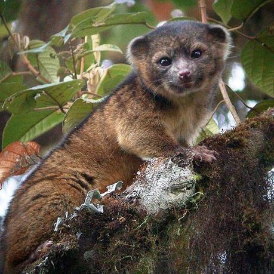

El olinguito (Bassaricyon neblina) es una especie de mamífero carnívoro de la familia Procyonidae, nativo de las montañas de los Andes de Colombia y Ecuador.13 Su identificación como especie independiente fue anunciada el 15 de agosto de 2013 por el Instituto Smithsoniano. Fue la primera especie del orden Carnivora identificada en el hemisferio occidental en 35 años
Es una especie casi endémica de Colombia ya que es compartida con Ecuador y Panamá. Su primer avistamiento registrado fue en la zona norte de Ecuador, cerca de la bifurcación de la cordillera. Su nombre cientifico le fue dado por su distribución en los bosques de niebla de Ecuador Y Colombia entre los 1500 y 2800 msnm
Su cuerpo (con la cabeza) alcanza una longitud promedio de 33,5cm, y su cola mide hasta 42,5cm de largo. Pesa unos 900g. Tiene ojos grandes. Su piel es gruesa y lanuda, más densa que la de sus parientes más cercanos; el pelaje es de color castaño-naranja o rojizo con puntas negruzcas. El olinguito se diferencia de la familia del Olingo por sus cualidades particulares, la mayor diferencia es su tamaño, es un individuo pequeño diferente al tamaño de los Olingos ya descubiertos. Es nocturno y solitario, vive en lo alto de los doseles de los arboles
Aunque se alimenta principalmente de frutas y néctar, también se alimenta de algunos insectos y vertebrados, lo que lo clasifica también en el orden de los carnivoros
Como es muy dificil de encontrar se dificulta demasiado su estudio, por lo que no hay casi información de él
Tiene una sola cría por parto.